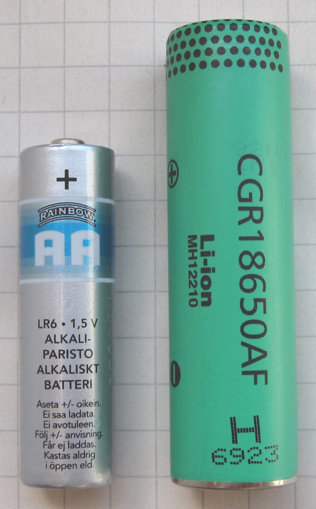
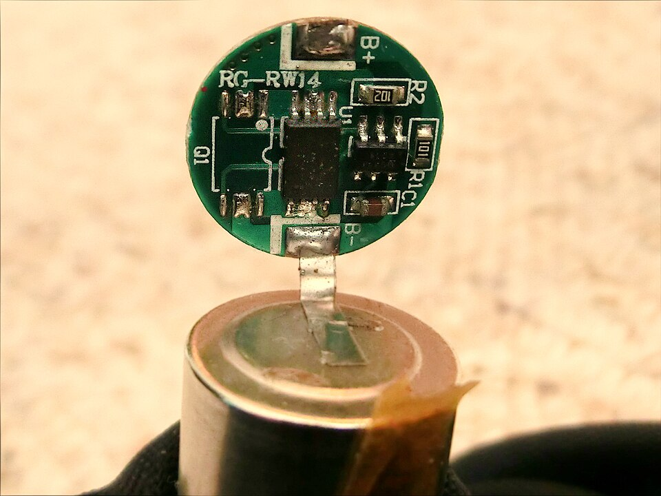

Lithium-ion cells, charging and protection
Distinguish the cell, pack protection, fuel gauge and charging circuit so a low runtime or a no-charge complaint becomes a testable diagnosis.
Cell, pack and device perform different jobs

Photo by Lead holder. Original photo · CC BY-SA 3.0.


Photo by Oldobelix, resized. Original photo · Public domain.

Watch on YouTube · Most BMSs (Battery Management Systems) don't cut it... I Built a BETTER One. · Haase Industries
Watch for the distinction between monitoring, balancing and protection. Compare those functions with a commercial pack’s documentation before choosing a charger or replacement.
A cell stores energy chemically. Pack protection monitors conditions such as overvoltage, undervoltage and excessive current. A fuel gauge estimates state of charge using voltage, current history, temperature and a battery model. The host’s charge controller regulates the charge profile and may juggle adapter, system and battery power. Some packs use thermistors or a digital link. A connector that fits does not establish electrical or firmware compatibility.
Many lithium-ion charging profiles use constant current first, then hold a specified voltage as current tapers before termination. Some include precharge and temperature limits. Limits vary by cell chemistry and vendor. Use only the documented pack and charge arrangement. Swelling, damage, unexpected heat or liquid exposure is a stop condition. Follow the device maker’s process for handling and qualified disposal. EPA guidance on damaged and swollen lithium-ion batteries.
What runtime tells you
Charge capacity is measured in Ah. Approximate stored energy in Wh is nominal pack voltage times Ah. An 11.4 V, 3 Ah pack is nominally 34.2 Wh. A constant 10 W load would ideally run about 3.4 h. Cutoff, converter loss, age and temperature reduce available runtime. Under load, internal resistance causes a voltage drop roughly equal to I × R. A worn pack can report charge at idle and still shut down when the load rises.
What bench evidence can tell you
Use documented battery health and charge diagnostics on a physically sound device. Compare behaviour with a known-good supported adapter or pack where the manual permits. Check reporting, temperature, stated charge thresholds and whether system load consumes the adapter budget. Preserve the original pack labels and test context in the repair record.
Why might a device draw input current while its battery percentage stays constant?
Input power can be serving the running device. Charge may also be limited by temperature, battery policy, an adapter power limit or a fault in the charging path. The adapter meter alone cannot show which is happening.
Practice P34 · Use a phone’s model-specific module procedure